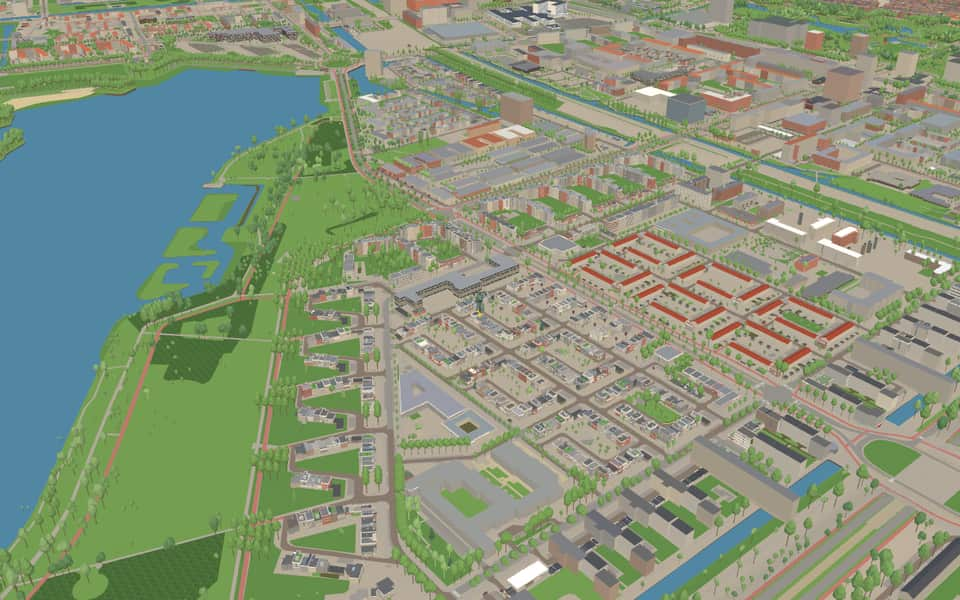
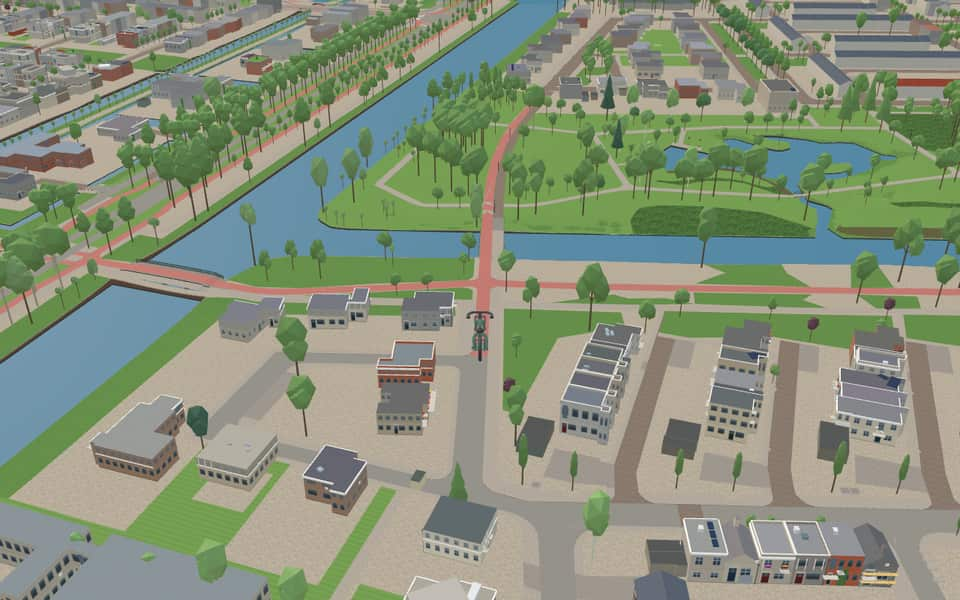
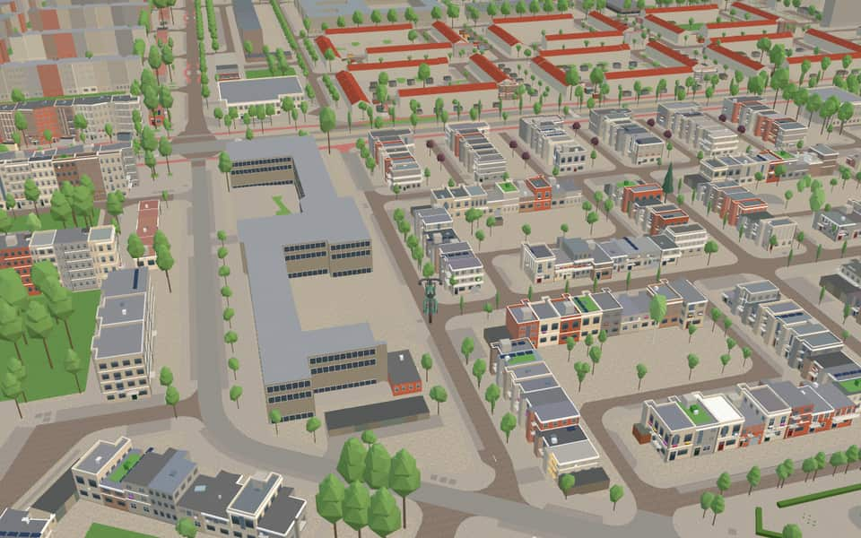

Quarter · Amsterdam
Slotervaart
Slotervaart (short for Tuinstad Slotervaart) is a neighborhood in the far western part of Amsterdam, Netherlands. The area is named after the canal Slotervaart; the first houses were built in 1955. Just outside the residential area there is a hospital, the Slotervaartziekenhuis (since 1976), and the Netherlands Cancer Institute (NKI) (since 1979). en.wikipedia.org
Ride Slotervaart506 kit buildings · 23 facts · 111 name stories

In the game
Frames from a ride through Slotervaart.


6 more photos of Slotervaart


Built here
Buildings modelled one by one for the ride.
Drawn from the building kit
506 buildings here use one of the game's reusable post-war building designs, fitted to their real footprint.
- Justus Halbertsmastraat, Johan Kernstraat 243
- Nieuw-West terraced house, dark red-brown brick 176
- Five-storey brick portiekflat 17 x 10.6 m, entrance at first-floor level up an open stair between two grey steel posts that carry stacked balconies and rise above the roof 30
- Five-storey prefab-panel flat closed ground storey 21
- Five-storey brick portiekflat 19.1 x 10 m, brick stair tower with one small window per floor and a cap above the roof 17
- Five-storey brick portiekflat 19.1 x 10 m with a solid brick stair tower projecting from the centre and rising above the roof, glass-block strips either side 12
- Five-storey prefab-panel flat on open pilotis, balcony pair in the CENTRE either side of the stair strip 7
Did you know
Trivia the ride can show you here.
- The Charmant couple were the first to move into the new garden suburb, on 19 October 1955. Wikipedia (translated from Dutch)
- Like the other western garden suburbs, Slotervaart was part of Cornelis van Eesteren's 1935 General Expansion Plan. Wikipedia (translated from Dutch)
- The first pile for the Slotervaart garden suburb was driven in 1954. Wikipedia (translated from Dutch)
- Its streets are named after historians, hydraulic engineers and actors, among others. Wikipedia (translated from Dutch)
- The Oostoever is named for what it is: part of the east bank of the Sloterplas. Wikipedia (translated from Dutch)
- Hans KressebrugIn 2023, the bridge was renamed to honor comic book artist Hans G. Kress. nl.wikipedia.org
- SloterplasThe lake was deepened to 38 meters by pouring in debris between 1948 and 1956. nl.wikipedia.org
- SloterplasAn outdoor swimming pool opened on the northwest bank in 1957. nl.wikipedia.org
- SloterplasThe northern bank became a protected landscape on October 18, 2017. nl.wikipedia.org
- SloterplasIn 2024, protection expanded to cover the entire lake and all its banks. nl.wikipedia.org
- Cornelis LelylaanThe road honors Cornelis Lely, the engineer who designed the Zuiderzeewerken waterworks. nl.wikipedia.org
- Cornelis LelylaanThe road is spanned by viaducts of the western ring railway at Lelylaan Station. nl.wikipedia.org
- Cornelis LelylaanMultiple bridges cross waterways like the Postjeswetering and streets such as Derkinderenstraat. nl.wikipedia.org
- Johan HuizingalaanA large viaduct crossing the avenue has served as the district center since 1962. nl.wikipedia.org
9 more facts
- Johan HuizingalaanAn immigration police office now occupies a building that was originally IBM-Netherlands headquarters. nl.wikipedia.org
- OostoeverOostoever means "eastern bank" and was named for forming the eastern shore of the Sloterplas. nl.wikipedia.org
- OostoeverA street called Westoever existed from 1948 until it became President Allendelaan in 1974. nl.wikipedia.org
- OostoeverThe sewage plant on the east side gave way to a new residential area in the 1990s. nl.wikipedia.org
- OostoeverA planned observation tower was never built because funding ran out before construction could begin. nl.wikipedia.org
- Pieter CalandlaanThe south side originally held addresses up to 1377, while the north side only reached 258 due to far fewer buildings. nl.wikipedia.org
- Pieter CalandlaanAn extension toward Ecuplein added north-side addresses, pushing the maximum number to 822. nl.wikipedia.org
- Pieter CalandlaanThe south side bears the name Pieter Calandplantsoen due to a shortage of house numbers. nl.wikipedia.org
- Pieter CalandlaanPaul Vendel's Swarm sculpture was installed at the intersection with Baden Powellweg in 2006. nl.wikipedia.org
Names on the map
Where the canal, bridge and street names come from.
Canals and water
- SloterplasThe name comes from the Slotermeer, a lake between Sloten and Sloterdijk which, after repeated drainings, was dug out again into water for sand extraction. This water is the Sloterplas.
Bridges
- Hans KressebrugHans Kresse was an important comic artist and a born Amsterdammer, who became known for his comic strips of Eric de Noorman (Eric the Norseman). Kresse made many comics and stories based on history that became world-famous.Bridge 716: a concrete bridge for cyclists, dated 1961 in the city's bridge register.
Streets
- Aaf BouberstraatAafje ten Hoope (1885-1974), actress, wife of Herman Bouber. She started out in 1911 with Colnot and Poons, and from 1920 she and her husband ran their own company: Het Volkstoneel. She acted in 'De Jantjes' and in 'Op hoop van Zegen'.
- Adam van GermezhofActor (1610-1667) from the time of Vondel. He played roles in the plays of Brederode.
- Adriaan KluitstraatHistorian (1735-1807) and professor at Leiden. A specialist in the Middle Ages.
- Adriaan van der HorststraatActor, director and theatre manager (1868-1942). He staged the plays of Herman Heijermans. His wife, Wilhelmina van der Horst-van der Lugt Melsert, was a great tragedienne.
- Albert SchultenshofLinguist (1666-1750), professor at Franeker and Leiden. He discovered the importance of Arabic for the study of Hebrew.
- AlhambralaanThe palace and fortress of the Moorish rulers in Granada. The name literally means 'the red castle', because the palace is built of red brick. It is a magnificent monument of Islamic secular architecture, built mainly between 1238 and 1358.
- Alpert van MetzhofAlso known simply as Alpertus. He lived around the year 1000 and is regarded as the first historian of the northern Netherlands.
- Andries SnoekstraatActor (1766-1829). Together with Majofski and Wattier, he was a dominant figure in the heyday of Dutch theatre up to 1820.
- Andries VierlinghstraatHydraulic engineer (1507-1579), known in particular for building dikes, including near Steenbergen.
- Ank van der MoerstraatAnna Maria van der Moer (1912-1983) was an actress who performed with various companies, including the Nederlandse Comedie from 1950 to 1972. She also worked as a director and actress on radio and television programmes.
- Anske LammingastraatHydraulic engineer (1855-1920). He was the founder of irrigation engineering in what was then the Dutch East Indies.
- Anthony SpatzierhofActor (1718-1777) and also theatre director. He performed abroad several times.
97 more streets with a story
- Anton PetershofActor (1812-1872), very popular with Amsterdam audiences in the mid-nineteenth century.
- Ariana NozemanstraatAriana Nozeman, née van den Bergh (died 1661), actress. In 1655 she became the first woman to perform in the Amsterdamse Schouwburg.
- Bakhuizen van den BrinkhofReinier C. Bakhuizen van den Brink (1810-1865) was a man of letters and historian. He was on the editorial board of 'De Gids' and became National Archivist in 1854.
- BonnefantenstraatThe Bonnefantenmuseum in Maastricht, the provincial museum of Limburg for fine art and archaeology. The collection consists of old archaeological finds, medieval sculpture, early Italian painting, painting from the Southern Netherlands, and a department of contemporary art. In 1995 the new museum building, designed by the Italian architect Aldo Rossi, was opened.
- BoymanswegThe Museum Boijmans Van Beuningen in Rotterdam. Frans Jacob Otto Boijmans (1767-1847), a judge in Utrecht, left his art collection to the city of Rotterdam. The Museum Boijmans was founded in 1849. The addition Van Beuningen dates from 1958, when the collection was enlarged with that of the Rotterdam collector and patron D.G. van Beuningen (1877-1955).
- BurgersdijkstraatLeendert A.J. Burgersdijk (1828-1900), physicist and man of letters. He translated the complete works of Shakespeare into Dutch.
- Christiaan BrüningsstraatHydraulic engineer (1736-1805). He worked for the centralisation of water management.
- Christine PoolmanhofActress (1850-1930), for many years with the Royal Society Het Nederlands Toneel under Willem Royaards.
- Christine StoetzhofActress (1829-1897) who excelled in comic roles and succeeded Mrs Kleine as teacher at the Drama School. She was a granddaughter of Majofski, the mother of Marie van Westerhoven and the grandmother of Louis Chrispijn.
- Christoffel PlantijngrachtSouthern Netherlandish printer and lexicographer (1514-1589). His printing and publishing house in Antwerp grew into one of the most famous in Europe (now a museum).
- Christoffel PlantijnpadSouthern Netherlandish printer and lexicographer (1514-1589). His printing and publishing house in Antwerp grew into one of the most famous in Europe (now a museum).
- ColenbranderhofHerman Theodoor Colenbrander (1871-1945), historian. Editorial secretary of 'De Gids' and author of several historical works, among them 'De Patriottentijd', 'De Belgische Omwenteling' and 'Koloniale Geschiedenis'.
- ComeniusstraatJan Amos Komenský (1592-1670), who called himself Comenius. A founder of pedagogy, from Moravia (Czech Republic). He settled in Amsterdam in 1657 and lived for a long time with burgomaster De Geer at Keizersgracht 123 (the 'Huis met de Hoofden', house with the heads). He is buried in Naarden, where his mausoleum is now part of the Comenius Museum.
- Cor HermusstraatActor and director (1889-1953). As a gifted teacher he influenced the younger generation.
- Cor RuyshofActor (1890-1952) who excelled in comedy. For many years he performed with his own company.
- Cornelis LelylaanHydraulic engineer and statesman (1854-1929), several times Minister of Water Management. He designed the plan to close off the Zuiderzee and partly drain it. His statue, by Man Andriessen, stands at the start of the Afsluitdijk. The town of Lelystad, capital of the province of Flevoland, is named after him.
- Cornelis van AlkemadestraatHistorian (1654-1737) who wrote about old monasteries and noble houses.
- DrusiushofJoannes van den Driesche or Drusius (1550-1600), orientalist, professor in the Netherlands and England.
- Emanuel van MeterenstraatSouthern Netherlandish merchant and historian (1535-1612), whose works include 'Historie der Nederlandscher oorlogen' (history of the Netherlands wars).
- Enny VredestraatEnny Vrede, stage name of Maria Magdalena Müller (Utrecht, 3 November 1883 - 2 April 1919), Dutch actress. She made her debut in 1908 with Eduard Verkade's company De Hagespelers, studied in Berlin with Max Reinhardt, and made her name in English society plays as well as in leading roles such as Shakespeare's Juliet and Shaw's Candida. She and her second husband died on the way back from their honeymoon in Norway, when the SS Amstel sank between Gothenburg and Rotterdam; their bodies were never found.
- Esther de Boer-van RijkstraatActress (1854-1937). She played the part of Kniertje in Herman Heijermans's 'Op hoop van zegen' more than a thousand times.
- Everard van ReijdhofHistorian (1550-1602), councillor of the Frisian stadholder Willem Lodewijk. His works include 'Historie der Nederlandscher oorlogen' (history of the Netherlands wars), an important source for knowledge of the Dutch Revolt.
- Fijnje van SalverdastraatJohannes Gerardus Wijbo Fijnje van Salverda (1796-1889), water management and railway engineer and inventor. As chief engineer of Rijkswaterstaat he was put in charge of the improvement of the Nieuwe Waterweg.
- GuggenheimlaanThe Solomon R. Guggenheim Museum in New York, designed by Frank Lloyd Wright and built in 1956, known for the gallery that spirals around the central hall. The core of its modern art collection was assembled by the multimillionaire Solomon Guggenheim.
- HemsterhuisstraatTiberius Hemsterhuis (1685-1766), classical philologist, professor in Amsterdam (philosophy) and later at Franeker and Leiden (Greek and national history).
- Hendrik de BruynstraatHydraulic engineer (1815-1885), known for the water-management works he built in Surabaya (Dutch East Indies).
- Hendrik van WijnstraatHistorian (1740-1831), founder of the General State Archives (1802). He wrote supplements and notes to the 'Vaderlandsche Historie' of the historian Jan Wagenaar.
- HermitagelaanThe Hermitage Museum in St Petersburg, one of the largest museum complexes in the world. Its collection began with the precious private imperial collection of paintings. It is famous for its works by Titian, Rubens and above all Rembrandt.
- Hof van VersaillesThe Palace of Versailles, south-west of Paris, one of the most impressive Baroque buildings in Europe, built for Louis XIV and largely completed between 1661 and 1690.
- HolwerdahofJan Hendrik Holwerda (1873-1951), archaeologist and historian, director of the National Museum of Antiquities in Leiden. His works include 'Nederland's vroegste beschaving' (the Netherlands' earliest civilisation, 1925).
- Isaak GosseshofHistorian (1873-1940), professor in Groningen, who with N. Japikse wrote the 'Handboek tot de staatkundige geschiedenis van Nederland' (handbook of the political history of the Netherlands).
- Jacob GeelstraatMan of letters and philologist (1789-1862) who campaigned against outdated art forms.
- Jacob KrausstraatHydraulic engineer (1861-1951), Minister of Water Management in 1905 and 1908, who directed the building of harbour works in Chile.
- Jacoba MosselhofIn the Dutch Protestant League, Jacoba Mossel started the discussion on whether women could work as religious teachers and preachers. She asked the executive to admit women to the training for religious teachers, and it agreed.
- Jacques VeltmanstraatLouis Jacques Veltman (1817-1907), actor. Besides the popular 'marqué', the villain in the melodramas, he was also a talented actor in the classical genre.
- Jan C. de VoshofJan Cornelis de Vos (1855-1931), actor and director, called Jan C. by his colleagues. For many years with the Vereeniging Het Nederlandsch Tooneel, he was a guide to many young actors and actresses.
- Jan MuschstraatJohannes Petrus Musch (1875-1960), actor, a brilliant interpreter of Shakespeare and Vondel, who played a long series of great roles (Lucifer, De wijze kater, Nathan the Wise, Molière's Miser). In 1952 he celebrated 60 years on the stage.
- Jan PuntstraatAn eighteenth-century actor, much admired in his day and later fiercely criticised. Punt was also a skilled engraver.
- Jan TheuniszhofLinguist (1569-1638), specialising in Arabic.
- Jan van HouthofMan of letters (1542-1609), the first scholarly archivist, who wrote the first Dutch alexandrines.
- Johan HuizingalaanHistorian (1874-1945), professor at Groningen and Leiden, with many publications to his name, including 'Herfsttij der Middeleeuwen' (The Waning of the Middle Ages).
- Johan KernstraatLinguist (1833-1917), professor of Sanskrit at Leiden, and an expert on Indian and Malayo-Polynesian languages and literatures.
- Johan RamaerstraatHydraulic engineer (1852-1932) who built the Merwedekanaal.
- Johannes de BekahofA fourteenth-century chronicler, whose works include the 'Great Chronicle of the Bishops of Utrecht'.
- Johannes JelgerhuishofActor, draughtsman and painter (1770-1836), who excelled as a character actor.
- Johannes van MeurshofHistorian (1579-1639), professor of history and Greek at Leiden, who wrote important historical works on the Netherlands and Denmark.
- John MotleyhofJohn Lothrop Motley (1814-1877), American historian of the Netherlands, whose works include 'The Rise of the Dutch Republic' (1856) and 'The Life and Death of John of Barneveld' (1875).
- Joseph ScaligerstraatJoseph Justus Scaliger (1540-1609), classical philologist and professor in Geneva. As a Huguenot he fled after the St Bartholomew's Day Massacre and later came to Holland, where he became a professor at Leiden. He taught Hugo de Groot and founded the Leiden school of philology.
- Justus HalbertsmastraatFrisian writer, philologist and historian (1789-1869).
- Justus LipsiusstraatLinguist (1547-1606), professor at Leiden and later at Leuven.
- LakenhalstraatThe Stedelijk Museum De Lakenhal in Leiden, in a 1640 building by the city architect Arent van 's-Gravesande (originally the cloth hall). It opened as a museum in 1874 and is known for its historical collection of silver, glass, pewter and tiles, and for paintings by famous people of Leiden.
- Lobo-BraakensiekstraatGreta Lobo-Braakensiek (1882-1926) and David Jessurun Lobo (1884-1926) were celebrated stage actors. David was also a director and translated several plays. The couple were killed in a railway accident near Leiden.
- Louis BouwmeesterstraatLouis Frederik Johannes Bouwmeester (1841-1925), actor. For many years with the Vereeniging Het Nederlandsch Tooneel, he founded the Haarlemsch Tooneel in 1903. He excelled above all in the classical repertoire.
- Louis ChrispijnstraatThe father, Louis Chrispijn Sr (1854-1926), a gifted actor and director, and the son, Louis Chrispijn Jr (1878-1931), an actor who excelled above all in comedy.
- Louis MoorhofLouis Barth. Joh. Moor (1856-1937), actor, who played above all in the French comedy company. He was also well known as a director and as a translator of foreign plays.
- LouvrelaanThe Palais, later the Musée du Louvre, in Paris. Various architects worked on the building, begun in the sixteenth century, for centuries. The collection began with the art treasures of the French kings, above all Francis I and Louis XIV, and the royal collection was greatly enlarged by Napoleon. France's most important museum.
- Maria BeshofMaria Elisabeth Bes was the first woman student at the Polytechnic School in Delft (today's TU Delft) and the first woman chemical engineer.
- Marie van WesterhovenstraatActress (1857-1946), married to Louis Chrispijn, who was on the stage for more than sixty years and also performed in operetta for many years.
- Marten CorverhofActor and theatre reformer (1727-1794).
- Mattheus SladushofLinguist (1569-1629), specialising in Hebrew and Arabic.
- MezquitalaanAn Islamic building in Córdoba, fortress-like in appearance, founded in 785 by Emir Abd al-Rahman. Over the centuries Christian elements were added, the most important being the sixteenth-century cathedral in the middle of the complex.
- Nicolaas JapiksestraatHistorian (1872-1944), director of the Queen's Royal House Archive, who wrote historical studies including 'Geschiedenis van het Huis van Oranje-Nassau' (history of the House of Orange-Nassau).
- OostoeverAfter its position relative to the Sloterplas (the east bank).
- ParthenonhofThe great Doric temple on the Acropolis of Athens, built in 447-432 BC in honour of the city goddess Athena, the high point of Greek architecture for its unsurpassed harmonious proportions.
- Pauwels-van BienestraatThe artist couple Désiré Pauwels (1861-1942) and Sophie van Biene (1854-1907). Pauwels was a famous singer, first at the French Opera in The Hague and later at the Dutch Opera; Sophie van Biene was an actress with the Nederlandsch Tooneel.
- Petrus BlokhofHistorian (1855-1929), professor at Leiden, author of 'Geschiedenis van het Nederlandsche volk' (history of the Dutch people) and of a social history of Leiden.
- Pieter BorstraatPieter Christiaanszoon Bor (1559-1635), historian and Receiver of Holland, author of 'De Nederlandsche oorlogen' (the Netherlands wars).
- Pieter CalandlaanHydraulic engineer (1826-1902), whose name is linked above all with building the Nieuwe Waterweg from Rotterdam to Hoek van Holland (1866-1872).
- PradolaanThe Museo del Prado in Madrid, the national museum of Spain, opened in 1819. The basis of its rich collection was laid by the collection of Charles V, greatly enlarged by Philip II and Philip IV. It is famous for its paintings by Spanish, Italian and Southern Netherlandish artists.
- Reinhard DozyhofHistorian (1820-1883), professor at Leiden and a renowned orientalist.
- Reinier EngelmanstraatActor (1795-1845), pupil and later partner of Andries Snoek.
- Rietveld SchröderpadThe Rietveld Schröder House museum in Utrecht. The architect Gerrit Rietveld (1888-1964) designed the house for Truus Schröder-Schräder, whose contribution largely shaped the final result. The house, its interior and its furniture follow the architectural principles of De Stijl. After Truus Schröder's death in 1985 the house was opened to the public.
- Robert FruinlaanRobert Jacobus Fruin (1823-1899), historian, professor at Leiden, who wrote many historical studies, among them 'Tien jaren uit den Tachtigjarigen Oorlog' (ten years of the Eighty Years' War).
- Schotse HuizenpadThe mountains of Scotland.
- SierpleinBefore houses were built on this square and it got an official name, it was popularly called Sierplein (ornamental square) because of its decorative paving.
- Simon van GijnpadThe Museum Mr. Simon van Gijn in Dordrecht. In 1925 the former house, from 1729, of the banker and collector Simon van Gijn (1836-1922) was turned into a museum. Besides its authentic interiors, the museum is known for its collection of Dutch historical prints and its applied art and old toys.
- SingerstraatThe Singer Museum in Laren. The American painter W.H. Singer Jr. (1868-1943) came to Laren around 1900 and had a villa built in 1911. In 1956 a new wing of the building was opened as a museum. Its collection is based on that of the Singer couple: nineteenth- and twentieth-century works mainly by Dutch and French artists.
- Tartaud-KleinhofThe acting couple Frits Tartaud (1857-1946), actor-director and head of the Rotterdam theatre company, and his wife Alida Klein (1873-1938), a gifted tragedienne.
- TeylerpleinThe oldest museum in the Netherlands: Teylers Museum in Haarlem. The eighteenth-century merchant Pieter Teyler van der Hulst left his fortune to promote art and science. In 1784 the museum began with one room displaying physical instruments, extinct animals and drawings. Over time the collection has grown to include paintings, coins and fossils, among other things.
- Theo Mann-BouwmeesterhofThe actress Theodora Mann, née Bouwmeester (1850-1939), sister of Louis Bouwmeester and one of the greatest tragediennes. Her star roles included Tosca, Lady Macbeth and Mary Stuart.
- Theodorus MajofskistraatTheodorus Johannes Majofski (1770-1836), actor of Polish descent and founder of a famous acting family, in his day one of the most important figures of the Amsterdam stage.
- Thomas van ErpehofProfessor of Oriental languages (1584-1624) at the University of Leiden, a bosom friend of Hugo de Groot.
- TopkapipadThe Topkapı Museum in Istanbul, one of the finest surviving examples of secular architecture in Istanbul, originally the palace of the sultans and open as a museum since 1924. Its collection holds the most varied objects that belonged to the Ottoman court, including weapons, porcelain, jewellery, clothing and miniatures.
- TourniairestraatBachigaloupi Tourniaire (1850-1921), in his day a much-loved actor who excelled in comic roles, and his son Oscar Tourniaire (1880-1939), who played many Shakespeare roles.
- TretjakovlaanNamed after the Tretyakov Gallery in Moscow, whose building was completed in 1900. The collection is based on the art collection of Pavel Tretyakov, who gave it to Moscow in 1892, and is famous for its unique collection of icons.
- TrianonpadThe name of two small palaces in the park of Versailles: the Grand Trianon, built for Louis XIV (1687-1688), and the Petit Trianon, built for Louis XV (1762-1768).
- Tutein NoltheniusstraatRudolf Peter Johannes Tutein Nolthenius (1851-1939), hydraulic engineer, who drew up plans for moving the mouth of the Maas.
- Ubbo EmmiushofHistorian (1547-1625), the first rector magnificus of the University of Groningen.
- UffizilaanThe Galleria degli Uffizi in Florence, a museum. Most of the building was put up between 1560 and 1580. The painting collection is based on the art collection of the Medici family and includes works of the Florentine, Venetian and Dutch schools.
- Van AbbestraatThe Stedelijk Van Abbemuseum in Eindhoven. The art collector Henri van Abbe gave Eindhoven a museum of contemporary art in 1936, whose collection then consisted mainly of works Van Abbe had bought himself. Over the years the museum has built up an important collection, including works by Picasso, Chagall, Mondrian and Appel.
- Van Bommel-Van DampadThe Museum Van Bommel Van Dam in Venlo. In 1967 Maarten van Bommel and his wife Reina van Bommel-van Dam gave their art collection to the municipality of Venlo, and in 1971 it was housed in a museum named after the couple. The collection ranges from paintings and drawings by Dutch artists to wooden sculptures from Africa.
- Van Mourik BroekmanstraatGerrit H. van Mourik Broekman (1875-1948), hydraulic engineer, from 1900 professor in Santiago (Chile) and adviser to the Chilean government, and from 1924 professor at Delft.
- Van OllefenstraatDaan van Ollefen (1824-1900) and Christina da Silva (1809-1881), an acting couple. Mrs Van Ollefen-da Silva was one of the three stars of the Leidseplein.
- Ward BingleystraatDutch actor of English birth (1757-1818), who often appeared in national tragedies.
- Wilhelmus LeemansstraatHydraulic engineer (1841-1929), chief inspector of Rijkswaterstaat, who had a share in building the Nieuwe Waterweg and the waterway from Zwolle to the Zuiderzee (IJsselmeer). A pumping station in the Wieringermeer polder is named after him.
- Willem MollhofChurch historian (1812-1879), professor at the Municipal University of Amsterdam, who laid the foundations of modern church history.
- Winkler PrinshofAnthony Winkler Prins (1817-1908), minister and writer, editor of the Winkler Prins encyclopedia named after him.